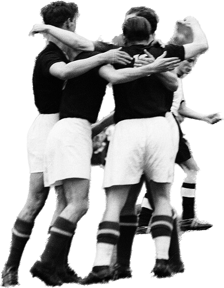
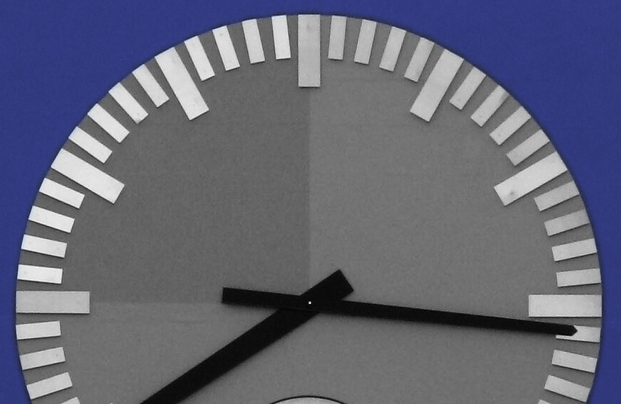
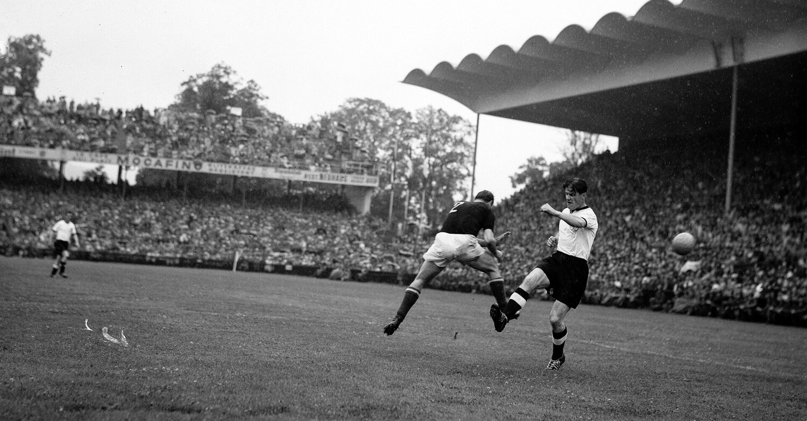

HUNGRÍA · 1950–1954
FINAL DE BERNA · MIN. 6, 1-0
4/7/1954 · COMET PHOTO AG, ZÚRICH
CC BY-SA 4.0
HUNGRÍA
1950
1950
CALENDARIO: RECREACIÓN
0
DERROTAS
HUNGRÍA
ALEMANIA

EL RELOJ DE LA FINAL · WANKDORF, BERNA · HOY, MEMORIAL · SANDSTEIN · CC BY 3.0

FINAL, MIN. 2 · FRITZ WALTER, AL FONDO · COMET PHOTO AG, ZÚRICH · CC BY-SA 4.0
RFA · FRITZ WALTER
CAPITÁN
CAMPO
SECO
FRITZ WALTER
ESQUEMA
UN TACO, DE LADO
SUELA
TACO CORTO
BOTA Y TACOS: RECREACIÓN
TACOS LARGOS
FOTOS: COMET PHOTO AG, ZÚRICH (CC BY-SA 4.0); SANDSTEIN (CC BY 3.0), VÍA WIKIMEDIA COMMONS
BOTA, TACOS, MARCADOR Y CALENDARIO: RECREACIÓN